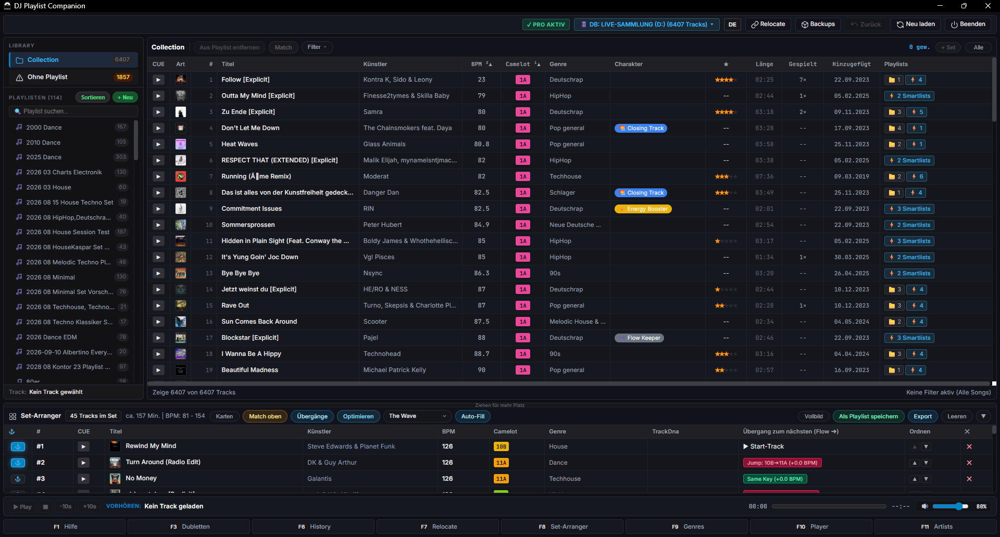
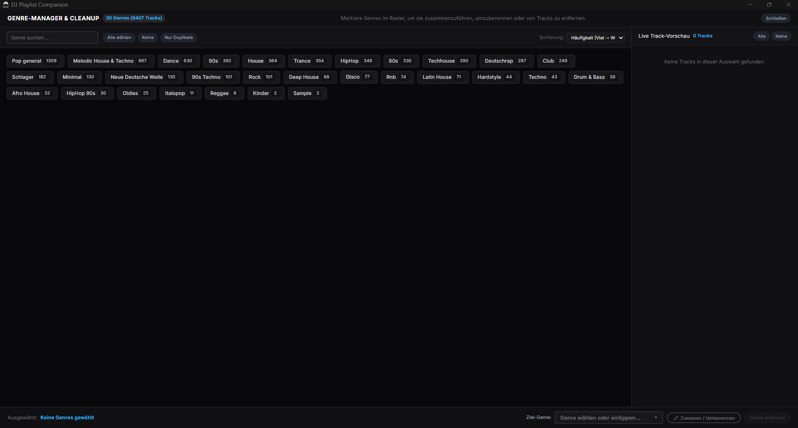
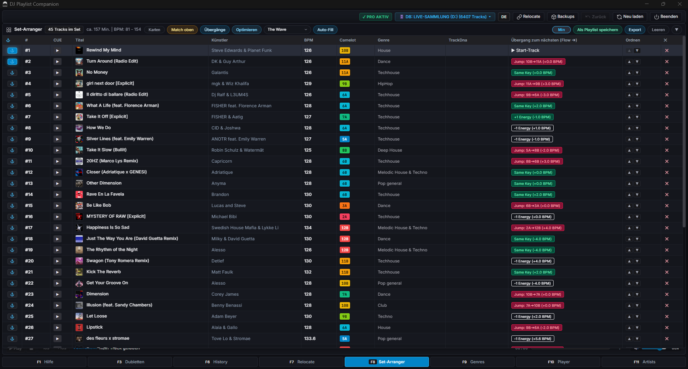
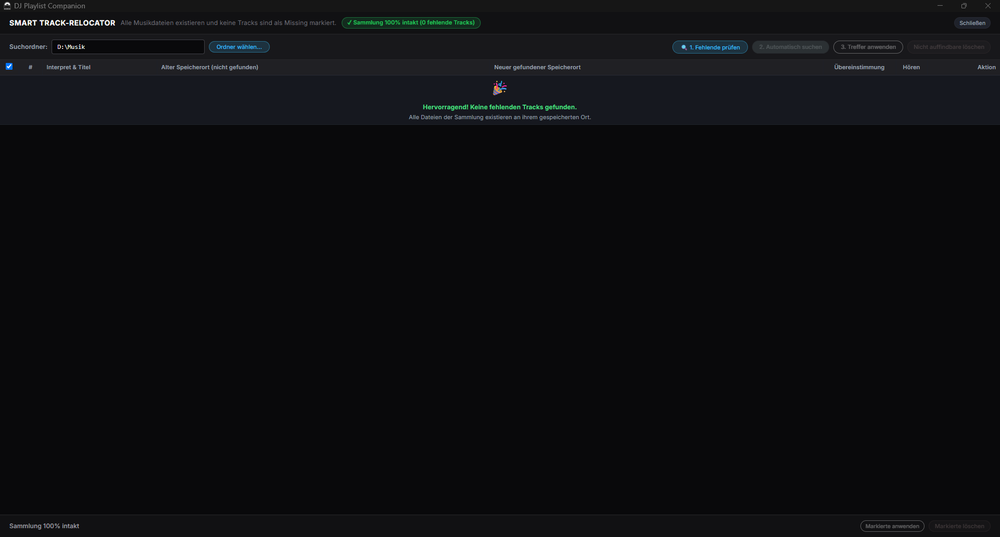
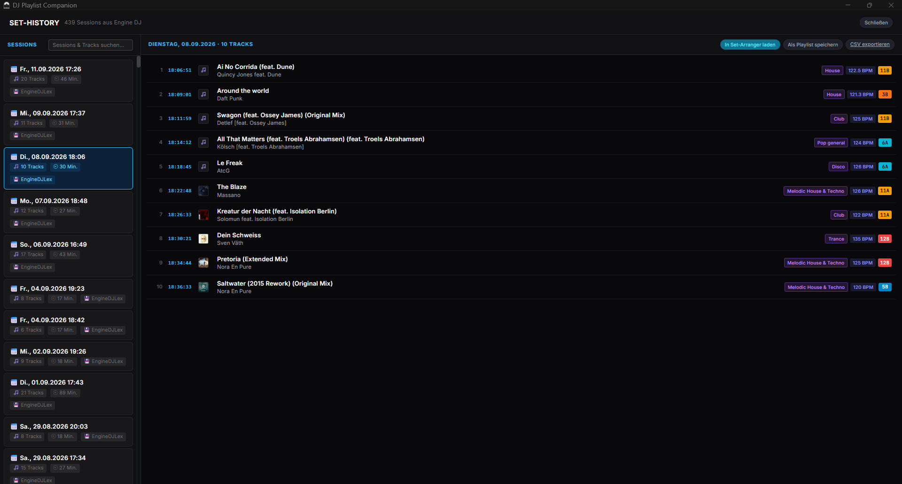
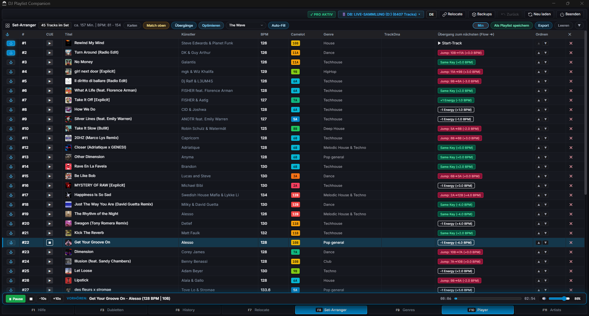

Manual playlist organisation
Building playlists track by track, again and again — with no overview of which track already sits in which playlist.
Open Beta · Windows 10 & 11
DJ Playlist Companion helps Engine DJ users organize, clean, analyze and manage large music collections faster and more efficiently.

Built for Engine DJ libraries used on Denon SC LIVE, Prime 4, Prime GO, SC6000 and Numark Mixstream Pro.
The daily reality
Engine DJ plays your music. Managing thousands of tracks is a different job — and it is still manual work.
Building playlists track by track, again and again — with no overview of which track already sits in which playlist.
Renaming genres, artists or titles one entry at a time. Even a small cleanup turns into an evening of clicking.
Typos, mixed spellings and inconsistent capitalisation spread until filters and search stop being reliable.
The same routine every few weeks: hunting duplicates, repairing paths, tidying genres. Time you would rather spend mixing.
The more tracks you own, the harder it gets to keep an overview — and on a device screen every extra step really hurts.
No set planning by target duration, no energy flow, no history search, no quick preview. Engine DJ simply leaves these gaps.
The solution
Every tool works directly on your existing Engine DJ database — and the companion backs up your library before it writes anything.

Batch editing
The Genre Manager and Artist Manager group spelling variants, typos and inconsistent capitalisation, then apply one corrected value to all affected tracks at once. A–Z jump bars take you straight to the entry you are looking for.

Faster playlist management
The Set-Arranger plans your playlist around a harmonic key flow and a BPM curve. Pick a tension profile such as The Wave, Progressive Ramp or Peak-Time and let the companion order the tracks for you.
Metadata enhancements
Every track shows the playlists it belongs to, and the duplicate cleaner finds the same track in several places — so you can see what is missing from your sets instead of guessing.

Library optimization
The Smart Track Relocator scans your drives for tracks Engine DJ can no longer find and suggests the correct path. It repairs the database entries instead of forcing a full re-import.

Workflow automation
Set-History lists past sessions, so you can search what you played and export it as a playlist in one click. Playlist Autofill fills a new playlist by target duration or track count — filtered by BPM range, energy level, genre and rating.

Custom DJ productivity tools
The built-in CUE Player auditions tracks without leaving the companion — space bar to play, arrow keys to scrub. And every permanent change is preceded by an automatic backup of your library.
Video demonstration
A short walkthrough of the companion: library overview, Set-Arranger, cleanup tools and writing the result back into Engine DJ.
The video is hosted on YouTube and only loads after you click play — nothing is requested before that.
Screenshot showcase
Six screens from the current beta build — everything runs on your own machine, completely offline.
1 / 6
How it works
No migration and no re-import of your music — the companion works with the library you already have.
Point the companion at your Engine Library folder — on your PC, a USB stick or an external SSD. It reads the existing Engine DJ database and shows your collection exactly as it is today. Nothing is changed at this point.
Use the Set-Arranger, the duplicate cleaner, the genre and artist managers, the track relocator and the history search to clean up and plan your sets. Every permanent change is backed up before it happens.
Write the cleaned playlists back into the Engine DJ database or export them as .m3u files — then carry on with your players exactly as before.
Beta program
DJ Playlist Companion is in beta: every function is unlocked, there are no track limits, and your feedback directly shapes what gets built next.
Windows 10/11 (64 bit). The build is not code-signed yet, so Windows SmartScreen may warn you — choose "More info" → "Run anyway".
The test period starts with your first launch. All tools, no limits — no account and no credit card required.
Report bugs or share ideas in GitHub issues and discussions. Real-world libraries are the most valuable test material.
Fresh builds appear in the releases section together with notes on what changed in each version.
The companion backs up your library before permanent changes — and please still keep your own backup while testing.
Questions & answers
A desktop companion for your Engine DJ library. It organises playlists, cleans up metadata in bulk, plans sets, relocates missing tracks and keeps automatic backups — all directly on your existing Engine DJ database. It is an independent tool, not affiliated with inMusic Brands Inc. or Denon DJ.
No. Your audio files are never touched. Changes only happen in the Engine DJ database (m.db), and only when you press save. Before every permanent change the companion creates a backup of your library so you can roll back. As with any beta, please keep your own backup of the library as well.
No. Engine DJ does not have to be installed — an existing Engine Library (database) on your PC, a USB stick or an external SSD is enough. Keep Engine DJ closed while saving, otherwise the database files can be locked.
Yes. The beta is free and runs for 120 days with the full feature set and without track limits. After that the app switches to read-only mode: viewing, set planning, audio analysis and backups remain available, saving requires activation. Nothing gets deleted, and a Pro licence is in preparation.
Bugs and ideas are collected on GitHub: open an issue with the prepared bug template, or join the discussions for questions and exchange with other testers. Log files live in %LOCALAPPDATA%\DJ Playlist Companion\logs — please check them for personal file paths before uploading.
Join the beta and get a cleaner, faster workflow on the hardware you already own.
Download Beta NowFree during the beta · Windows 10/11 · No account required